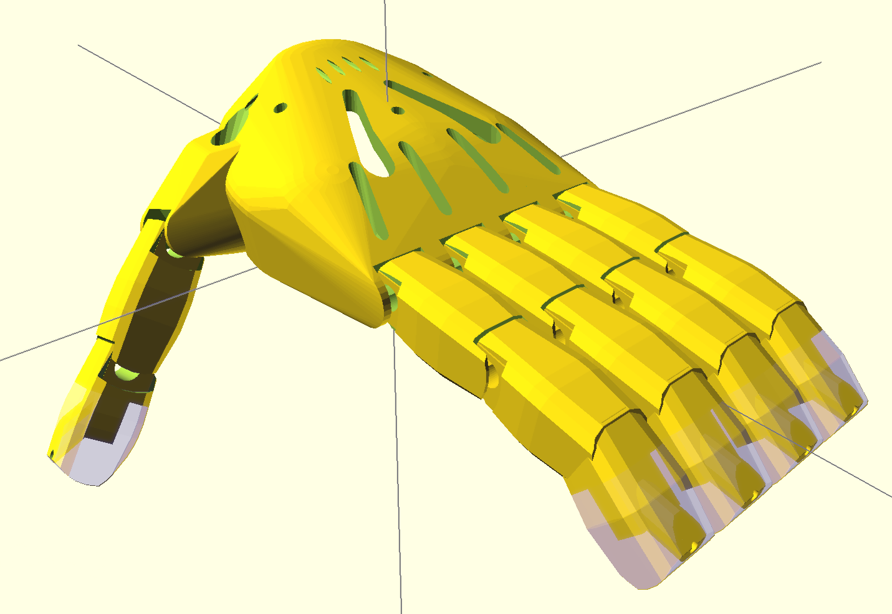
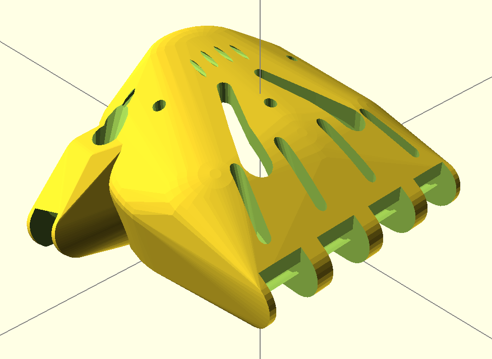
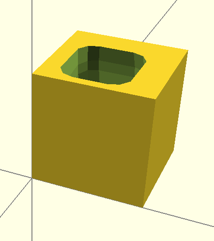
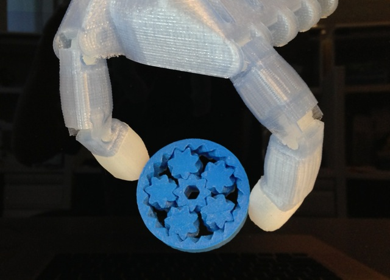
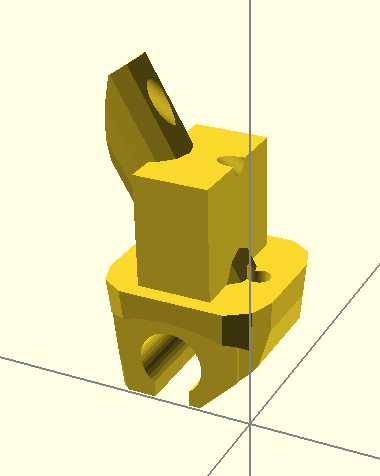

Flexy Beast
The Flexy Beast is a wrist-powered prosthetic hand for the e-NABLE Project. This is a mashup of the Parametric Cyborg Beast by MakerBlock and the Flexy Hand by Steve Wood/Gyrobot. Like the Flexy-Hand, the Flexy Beast uses flexible joints to replace the Chicago screws and elastics used on previous e-NABLE designs. This makes the hand lightweight, less expensive, better looking, more adaptable for smaller sizes, and easier to assemble and use.
Bill of Materials
Check all parts to get green BOM button in menu, then proceed to the assembly.
Don't worry, the status of your BOM remains even after refreshing the page!
Prerequisites!
| 1 x | Configuration File |
Flexible
| 10 x | Flexy Joint |
Other
| 5 x | String |
Printed
| 1 x | Thumb Tip | |
| 1 x | Index Finger Base | |
| 1 x | Pinky Finger Tip | |
| 5 x | Finger Tip Mold | |
| 1 x | Pinky Finger Base | |
| 1 x | Ring Finger Tip | |
| 1 x | Index Finger Tip | |
| 1 x | Palm | |
| 1 x | Ring Finger Base | |
| 1 x | Thumb Base | |
| 1 x | Middle Finger Tip | |
| 1 x | Middle Finger Base |
Things Overview
List of things and their descriptions
Assembled Middle Finger
Assembled Ring Finger
Palm
Palm - rendered from parts/palm.scad
Ring Finger Base
Proximal phalanx for ring finger - rendered from parts/finger_ring_base.scad
Finger Tip Mold
Mold for casting silicone finger tip grip - rendered from parts/finger_tip_mold.scad
Middle Finger Tip
Distal phalanx of middle finger - rendered from parts/finger_middle_tip.scad
Ring Finger Tip
Distal phalanx of ring finger - rendered from parts/finger_ring_tip.scad
Flexy Joint
Flex joint - can be molded in silicone or printed in Filaflex. The Configuration File instructions will help you find a good size for these.
Thumb Base
Proximal phalanx for thumb - rendered from parts/thumb_base.scad
Assembled Pinky Finger
Configuration File
Configuration settings for Flexy Beast, required to generate correctly sized STLs of the printed parts. See the Configuration File Assembly instructions to set this up.
String
Just some string
Pinky Finger Tip
Distal phalanx of pinky finger - rendered from parts/finger_pinky_tip.scad
Middle Finger Base
Proximal phalanx for middle finger - rendered from parts/finger_middle_base.scad
Grippy Thumb Tip
Molded silicone grippy thumb tip
Index Finger Base
Proximal phalanx for index finger - rendered from parts/finger_index_base.scad
Grippy Finger Tip
The Flexy Beast fingers can be made with silicone finger pads for improved grip. These finger pads are designed to be easily removeable and replaceable by hand, but attach firmly enough to stay on during use. Dragon Skin 10 silicone produces very soft and grippy pads; Dragon Skin 30 is tougher.
Thumb Tip
Distal phalanx of thumb - rendered from parts/thumb_tip.scad
Assembled Thumb
Index Finger Tip
Distal phalanx of index finger - rendered from parts/finger_index_tip.scad
Assembled Index Finger
Pinky Finger Base
Proximal phalanx for pinky finger - rendered from parts/finger_pinky_base.scad
Assembly Instructions
Assemble Grippy Finger Tip
Things needed:
| 1 x | Finger Tip Mold |
Steps:
- Print the finger tip and mold.

- Insert the string through the fingertip and tie off the end prior to molding (not shown in all photos here).

- Mix silicone according to the instructions from the supplier. Wear gloves and follow the supplier's safety instructions while working with liquid silicone.

- Pour the liquid silicone to mostly fill the fingertip mold.

- Insert the printed fingertip piece into the filled mold.

- Remove any excess silicone. If necessary, use tape to hold the phalange in place.

- When the silicone is cured, remove the fingertip and silicone pad from the mold. The pad may stay on the fingertip or it may need to be removed separately.

- If the pad came off the fingertip during demolding, it can be reattached by pushing it over the end of the fingertip.

- If necessary, use an x-acto knife to trim off excess silicone so that the edges of the pad are flush with the edges of the fingertip.
- The fingertip pads are finished. Continue installing them onto the hand.

Assemble Grippy Finger Tip
Things needed:
| 1 x | Finger Tip Mold |
Steps:
- Print the finger tip and mold.
- Insert the string through the fingertip and tie off the end prior to molding (not shown in all photos here).
- Mix silicone according to the instructions from the supplier. Wear gloves and follow the supplier's safety instructions while working with liquid silicone.
- Pour the liquid silicone to mostly fill the fingertip mold.
- Insert the printed fingertip piece into the filled mold.
- Remove any excess silicone. If necessary, use tape to hold the phalange in place.
- When the silicone is cured, remove the fingertip and silicone pad from the mold. The pad may stay on the fingertip or it may need to be removed separately.
- If the pad came off the fingertip during demolding, it can be reattached by pushing it over the end of the fingertip.
- If necessary, use an x-acto knife to trim off excess silicone so that the edges of the pad are flush with the edges of the fingertip.
- The fingertip pads are finished. Continue installing them onto the hand.
Assemble Configuration File
Steps:
- Open config.scad in your favorite text editor.
- As per the normal Cyborg Beast instructions, measure the width of the knuckles in the non-affected hand and convert to millimeters.
- Add 5 to that result and then divide by 55.
- Replace the x-, y-, and zScaleFactor variables in config.scad with that number.
- If desired, adjust the proportions of the hand by changing those variables individually. xScaleFactor controls the width of the hand, yScaleFactor controls the length, and zScaleFactor controls the height.
- Open assembly.scad in OpenSCAD to check that the flexy joint holes are not too large for the hand (should only be necessary for small children). If necessary, reduce the jointDia and jointThick variables. jointDia=5 and jointThick=2 is a good amount for smaller hands.
- Set the fingerPads variable to true or false depending on whether you want to cast silicone finger pads for improved grip.
- Open palm.scad, finger_base.scad, finger_tip.scad, and thumb_tip.scad in OpenSCAD, render each part (F6), and export as STL, then print. Suggested print settings are 0.2mm or smaller layer height, 3 perimeters, and 25% rectilinear or hexagonal infill.
Assemble Grippy Finger Tip
Things needed:
| 1 x | Finger Tip Mold |
Steps:
- Print the finger tip and mold.
- Insert the string through the fingertip and tie off the end prior to molding (not shown in all photos here).
- Mix silicone according to the instructions from the supplier. Wear gloves and follow the supplier's safety instructions while working with liquid silicone.
- Pour the liquid silicone to mostly fill the fingertip mold.
- Insert the printed fingertip piece into the filled mold.
- Remove any excess silicone. If necessary, use tape to hold the phalange in place.
- When the silicone is cured, remove the fingertip and silicone pad from the mold. The pad may stay on the fingertip or it may need to be removed separately.
- If the pad came off the fingertip during demolding, it can be reattached by pushing it over the end of the fingertip.
- If necessary, use an x-acto knife to trim off excess silicone so that the edges of the pad are flush with the edges of the fingertip.
- The fingertip pads are finished. Continue installing them onto the hand.
Assemble Grippy Finger Tip
Things needed:
| 1 x | Finger Tip Mold |
Steps:
- Print the finger tip and mold.
- Insert the string through the fingertip and tie off the end prior to molding (not shown in all photos here).
- Mix silicone according to the instructions from the supplier. Wear gloves and follow the supplier's safety instructions while working with liquid silicone.
- Pour the liquid silicone to mostly fill the fingertip mold.
- Insert the printed fingertip piece into the filled mold.
- Remove any excess silicone. If necessary, use tape to hold the phalange in place.
- When the silicone is cured, remove the fingertip and silicone pad from the mold. The pad may stay on the fingertip or it may need to be removed separately.
- If the pad came off the fingertip during demolding, it can be reattached by pushing it over the end of the fingertip.
- If necessary, use an x-acto knife to trim off excess silicone so that the edges of the pad are flush with the edges of the fingertip.
- The fingertip pads are finished. Continue installing them onto the hand.
Assemble Flexy Beast
Things needed:
| 1 x | Assembled Middle Finger |
| 1 x | Assembled Pinky Finger |
| 1 x | Configuration File |
| 1 x | Assembled Thumb |
| 1 x | Assembled Ring Finger |
| 1 x | Palm |
| 1 x | Assembled Index Finger |
Steps:
- Print the palm, thumb base, thumb tip, and four each of the finger base and tip. These can be scaled as needed in each dimension using the x-, y-, and zScaleFactor variables in the OpenSCAD code.
- Insert a string through each fingertip (the hole may need to be drilled slightly to deburr) and tie it off on the end.

- After making the 3D printed parts and flexible joints, slide a flex joint into the proximal end of each finger.

- Use a flat screwdriver or other thin, flat tool to insert the other end of the joint into the corresponding slot on the next inner segment.

- Route the string through all the finger segments.

- Route the string through the palm.